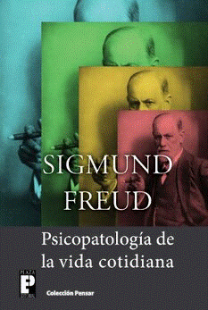
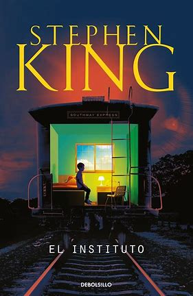

Crónicas de Tinta

En Cronicas de Tinta ofrecemos distintas categorias de lectura
Destacado
HeartStopper
 By Alice Oseman
By Alice Oseman
Destacado
Psicopatologia de la vida cotidiana

By Sigmund Freud
Destacado
El instituto

By Stephen King
Destacado
El problema de los 3 cuerpos
 By Cixin Liu
By Cixin Liu